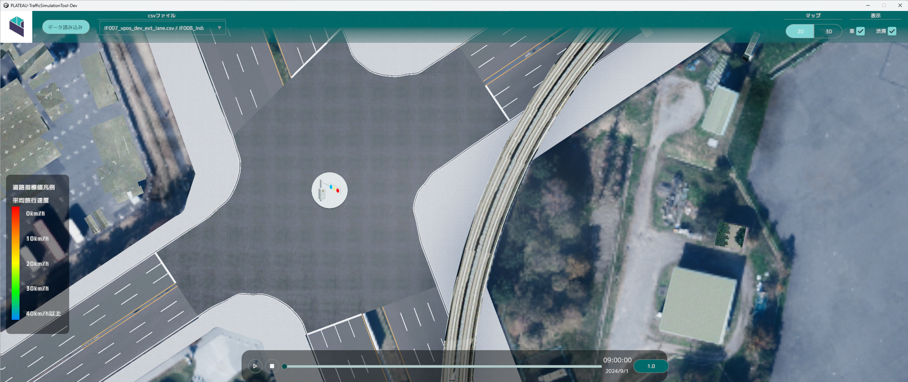

基本操作

視点操作

通常時、マウスとキーボードを使用してカメラを操作することができます。
マップを左クリックでドラッグしながら動かすことで、視点を水平に移動させることができます。
WASD キーでも、視点を水平に移動させることができます。
マップを右クリックでドラッグすることで、右クリックした場所を中心として視点を回転させることができます。
X キーで視点を下げ、Z キーで視点を上げることができます。
前方スクロールすることでズームイン、後方スクロールすることでズームアウトすることができます。
シミュレーションデータ読み込み

車両位置データおよび道路指標値データを読み込むことでシミュレーションデータ再生機能が使用できるようになります。
データ読み込みをクリックするとファイル読み込みウィンドウが表示されます。車両位置情報データ
選択をクリックし車両位置情報データを指定します。
道路指標値データ
選択をクリックし道路指標値データを指定します。
読み込みをクリックするとデータが読み込まれます。
シミュレーションデータ切り替え機能

データ読み込みで読み込まれたファイルがリストへ自動で追加されます。
- リストからデータを選択するとデータを切り替えることができます。
シミュレーションデータ再生機能

シミュレーションを再生することができます。
シミュレーションでは時間に応じた車両位置情報データに基づいた車両の表示および、
道路指標値データに基づいた道路指標値データの表示凡例に従いヒートマップが表示されます。
再生ボタンをクリックするとシミュレーションが開始されます。
停止ボタンをクリックするとシミュレーションが停止します。
スライダーを変更することで、再生する時間帯を変更できます。
スライダー右の再生速度ボタンをクリックするとリストが表示され、
リストから倍率選択するとシミュレーションの再生速度を変更することができます。
2D/3D切り替え機能
表示切り替えトグルを切り替えることで表示を切り替えることができます。
2D

3D

表示切り替え機能
車両および道路指標値の表示の有効化・無効化を行うことができます。
車

渋滞

ハイライト機能
 開発エリアに発着する車両のみを強調表示します。
開発エリアに発着する車両のみを強調表示します。
- 開発エリアをクリックするとハイライトされ、再度開発エリアをクリックすると表示が戻ります。